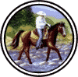

|

|
>> Содержание / Список кланов /
 Maverick Maverick
Приоткрыв глаза, Кара заставила себя проснуться. За окном пела заливаясь чима, маленькая черная птичка с красными крыльями. В это время года они начинают перелет в теплые края, к Демонс-Сити. Там, где из расщелин земли поднимается пар и языки огня ада, стаи чима будут жить долгих два месяца.
Кара улыбнулась и повернула голову, отыскав взглядом мужа. Время, прожитое с ним, было самым спокойным и для нее, и для всей деревни. Казалось, совсем недавно она пошла в лес с желанием набрать грибов, но когда навстречу вышли два шакала, Кара не испугалась – она знала, что о сироте в деревне будут плакать не долго. Тем более, образ жизни, который она вела, не нравился другим жителям; ее не понимали и боялись.
Дальнейшее она помнила смутно: появился кто-то третий, затем крики и предсмертный визг одного из шакалов. Когда она пришла в себя, у нее на коленях лежал окровавленный, но еще живой незнакомец.
Его телосложение выдавали в нем потомка темной расы. При других обстоятельствах Кара никогда бы не рискнула привести его в деревню. Но она притащила его на себе и выходила. Часто Кара любила повторять: "Спросите меня, когда мы с Тором полюбили друг друга, и я отвечу, что не знаю". Все получилось само собой, и их сын был желанен.
Но соседи не любили темных. Политика деревни - политика невмешательства – оправдывала себя до сих пор: жители не участвовали в войнах и могли спокойно созерцать и развиваться. Но этой войны им не избежать. Кара понимала это, как и многие в деревне - многие, но не все.
Громко хлопнула дверь, оторвав ее от размышлений. По звуку шагов Кара поняла, что сын пришел с охоты. Дан унаследовал от отца силу и тяжелый взгляд, от матери - ум и рассудительность. Он первый "полукровка", как называли его, - рожденный от темного мужчины и женщины-нейтрала. Когда он был мал, в деревне с ним нехотя играли другие дети, девчонки смеялись над ним. Но когда в 5 лет он принес тушу шакала из леса, они перестали смеяться - в них родился страх. Кара понимала, что ему будет тяжело найти свой путь: в деревне он чужак, нейтралы его не примут, она это знала, и темные тоже. Серые - редкое племя, разбросанное по всему свету, - таких вообще не признают; они и друг с другом договориться не могут…. Кара вздохнула: непростое наследство ей досталось.
Но путешественник, пришедший три дня назад в деревню рассказывал, что он встречал немало таких же людей со смешанной кровью. Он рассказывал много чудных историй про зеленый город, про дожди из крестов - он их так и называл "крестопады". Рассказывал про странных людей с крестами на груди, много других менее понятных историй. Рассказы так нравились Дару, что он решил оставить родительский дом. Он говорил, что хочет посмотреть мир, но Кара понимала: он едет искать свое племя и что-то еще, чего она не могла сейчас понять. Дар не пытался ей объяснить - это ему самому было трудно понять. Сейчас только внутренний голос вел его вперед. Разве знал он, сколько продлится его путь? Что его ждет в конце дороги? Конечно, нет. Единственное, что знал Дар - он будет всегда идти вперед. Он стал скитальцем…
Официальный сайт клана: http://www.maverick-clan.msk.ru/
|
 |
|